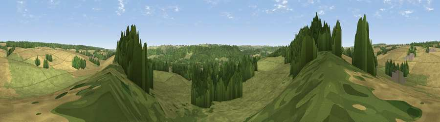

Viewpoint near Dinton
#33774 in England · top 62% of its area beats it · near DintonThe view, rendered

A 360° render of this exact spot computed from the terrain model, tree cover and land cover — summer colours, afternoon light, calibrated against photographs of famous viewpoints. Real trees, hedges and buildings will differ in detail.
The panorama
Grey silhouette: terrain skyline in each direction (720 bearings, Earth curvature and refraction included). Dashed green: skyline with trees (+15 m) and buildings (+8 m) as obstacles. Blue strip: how far the ground is visible on each bearing.
Where the view opens
Wedge length = distance to the farthest visible ground on that bearing (vegetation-aware). Rings at 10, 25 and 50 km.
What fills the view
46% grassland · 29% woodland · 25% cropland ·
Angular shares of the visible panorama (visual magnitude), not map area. Landscape diversity 0.48 (0–1 Shannon).
Key numbers
More beautiful places nearby
The staircase of upgrades: each row has a higher view potential than everything closer. Driving times are estimates from straight-line distance, calibrated against real road routing — check an actual route before setting out.
| Place | Direction | Drive | Score |
|---|---|---|---|
| Viewpoint near Teffont Evias | WSW · 1 km | ~3 min | 53.2 |
| West Hill | N · 3 km | ~7 min | 59.0 |
| Chiselbury Hill | SSE · 4 km | ~10 min | 59.2 |
| Hydon Hill | SE · 5 km | ~11 min | 61.2 |
| Ansty Down | SW · 9 km | ~18 min | 61.6 |
| Viewpoint near Fonthill Gifford | WSW · 10 km | ~19 min | 64.2 |
| Trow Down | SSW · 11 km | ~21 min | 67.5 |
| Monk's Down | SSW · 14 km | ~25 min | 74.4 |
51.08934, -1.98888 · source: screening · position refined by local search. Computed location — check access rights before visiting.